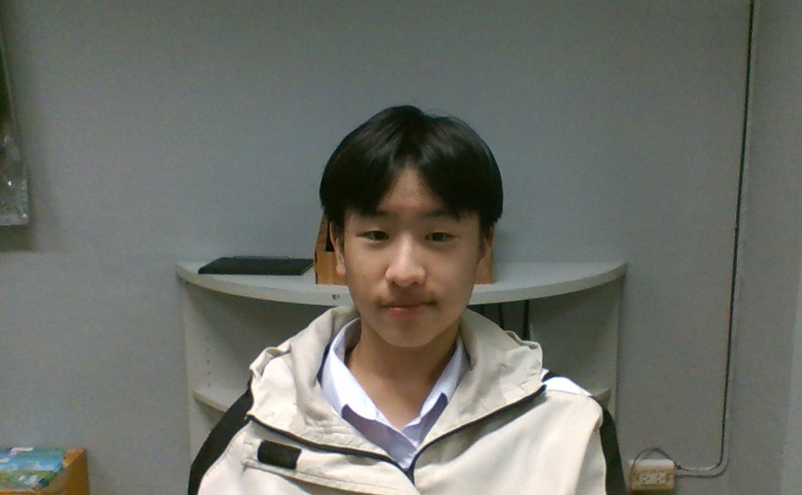

นางสาววิยดา ไตรยวงค์ : ขอบคุณครูคุกกี้เค้กที่สอนเขียนโค้ดให้ผมทั้งเว็บนี้และเว็บอื่นๆ ขอบคุณที่คอยให้คำปรึกษาในทุกๆเรื่องครับ
บทเพลงที่มอบให้ครู

นางนริสา กล่ำแสง : ขอบคุณครูนริสาที่สอนประวัติศาสตร์ผมให้เข้าใจง่าย และช่วยเหลือในงานต่างๆอยู่บ่อยครั้ง
บทเพลงที่มอบให้ครู

นายสุวิทย์ งามผักแว่น : ขอบคุณครูอุ๋งๆที่สอนผมการเขียนรายงาน และให้คำปรึกษามาโดยตลอดตั้งแต่ผมเข้าโรงเรียนนี้เลยครับ
บทเพลงที่มอบให้ครู

น.ส.ธัญวรินทร์ ฟั่นคุ้ม : ขอบคุณครูนินิวที่คอยสอนคณิตให้ผมเก่งขึ้น และให้คำปรึกษาอยู่บ่อยครั้ง
บทเพลงที่มอบให้ครู

ด.ช.ณภัทร เจียรโภคกุล ม.210 7